<<< 返回［配置详解］索引
< 用 Apache 构建 HTTP 服务器 > （最近更新日：2006/08/26）
对于大多数的网络服务器，最广泛的功能就是开通HTTP服务，达到开放和发布网站的目的。目前绝大多数的网络交互程序，例如论坛、社区等等也是基于HTTP而建立的。
在这里，我们通过Web服务器软件中使用量超过半数的自由软件Apache，来构建一台能够满足实际要求的多功能Web服务器，使它能够在我们发布网页的基础上，实现可以运行Perl、PHP的等等语言编写的交互程序，以及在虚拟主机、保密方面的功能。
首先来安装Apache服务器及相关组件。这里使用yum命令来在线安装。
[root@sample ~]# yum -y install httpd ← 在线安装httpd
Setting up Install Process
Setting up repositories
dag 100% |=========================| 1.1 kB 00:00
update 100% |=========================| 951 B 00:00
base 100% |=========================| 1.1 kB 00:00
addons 100% |=========================| 951 B 00:00
extras 100% |=========================| 1.1 kB 00:00
Reading repository metadata in from local files
Reducing Dag RPM Repository for Red Hat Enterprise Linux to included packages only
Finished
Parsing package install arguments
Resolving Dependencies
--> Populating transaction set with selected packages. Please wait.
---> Downloading header for httpd to pack into transaction set.
httpd-2.0.52-28.ent.cento 100% |=========================| 62 kB 00:00
---> Package httpd.i386 0:2.0.52-28.ent.centos4 set to be updated
--> Running transaction check
--> Processing Dependency: libaprutil-0.so.0 for package: httpd
--> Processing Dependency: apr >= 0.9.4-24.2 for package: httpd
--> Processing Dependency: libapr-0.so.0 for package: httpd
--> Processing Dependency: httpd-suexec for package: httpd
--> Restarting Dependency Resolution with new changes.
--> Populating transaction set with selected packages. Please wait.
---> Downloading header for apr to pack into transaction set.
apr-0.9.4-24.5.c4.1.i386. 100% |=========================| 7.5 kB 00:00
---> Package apr.i386 0:0.9.4-24.5.c4.1 set to be updated
---> Downloading header for httpd-suexec to pack into transaction set.
httpd-suexec-2.0.52-28.en 100% |=========================| 22 kB 00:00
---> Package httpd-suexec.i386 0:2.0.52-28.ent.centos4 set to be updated
---> Downloading header for apr-util to pack into transaction set.
apr-util-0.9.4-21.i386.rp 100% |=========================| 5.2 kB 00:00
---> Package apr-util.i386 0:0.9.4-21 set to be updated
--> Running transaction check
Dependencies Resolved
=============================================================================
Package Arch Version Repository Size
=============================================================================
Installing:
httpd i386 2.0.52-28.ent.centos4 update 888 k
Installing for dependencies:
apr i386 0.9.4-24.5.c4.1 base 88 k
apr-util i386 0.9.4-21 base 51 k
httpd-suexec i386 2.0.52-28.ent.centos4 update 28 k
Transaction Summary
=============================================================================
Install 4 Package(s)
Update 0 Package(s)
Remove 0 Package(s)
Total download size: 1.0 M
Downloading Packages:
(1/4): apr-0.9.4-24.5.c4. 100% |=========================| 88 kB 00:00
(2/4): httpd-suexec-2.0.5 100% |=========================| 28 kB 00:00
(3/4): httpd-2.0.52-28.en 100% |=========================| 888 kB 00:02
(4/4): apr-util-0.9.4-21. 100% |=========================| 51 kB 00:00
warning: rpmts_HdrFromFdno: V3 DSA signature: NOKEY, key ID 443e1821
Public key for apr-0.9.4-24.5.c4.1.i386.rpm is not installed
Retrieving GPG key from http://mirror.centos.org/centos/RPM-GPG-KEY-centos4
Importing GPG key 0x443E1821 "CentOS-4 key <centos-4key@centos.org>"
Key imported successfully
Running Transaction Test
Finished Transaction Test
Transaction Test Succeeded
Running Transaction
Installing: apr ######################### [1/4]
Installing: apr-util ######################### [2/4]
Installing: httpd ######################### [3/4]
Installing: httpd-suexec ######################### [4/4]
Installed: httpd.i386 0:2.0.52-28.ent.centos4
Dependency Installed: apr.i386 0:0.9.4-24.5.c4.1 apr-util.i386 0:0.9.4-21 httpd-suexec.i386 0:2.0.52-28.ent.centos4
Complete! |
为了使服务器开通HTTP服务后能够运行PHP编写的交互程序，接下来安装PHP。
[root@sample ~]# yum -y install php ← 在线安装PHP
Setting up Install Process
Setting up repositories
Reading repository metadata in from local files
Reducing Dag RPM Repository for Red Hat Enterprise Linux to included packages only
Finished
Parsing package install arguments
Resolving Dependencies
--> Populating transaction set with selected packages. Please wait.
---> Downloading header for php to pack into transaction set.
php-4.3.9-3.15.i386.rpm 100% |=========================| 23 kB 00:00
---> Package php.i386 0:4.3.9-3.15 set to be updated
--> Running transaction check
--> Processing Dependency: php-pear for package: php
--> Restarting Dependency Resolution with new changes.
--> Populating transaction set with selected packages. Please wait.
---> Downloading header for php-pear to pack into transaction set.
php-pear-4.3.9-3.15.i386. 100% |=========================| 33 kB 00:00
---> Package php-pear.i386 0:4.3.9-3.15 set to be updated
--> Running transaction check
Dependencies Resolved
=============================================================================
Package Arch Version Repository Size
=============================================================================
Installing:
php i386 4.3.9-3.15 update 1.3 M
Installing for dependencies:
php-pear i386 4.3.9-3.15 update 266 k
Transaction Summary
=============================================================================
Install 2 Package(s)
Update 0 Package(s)
Remove 0 Package(s)
Total download size: 1.6 M
Downloading Packages:
(1/2): php-pear-4.3.9-3.1 100% |=========================| 266 kB 00:00
(2/2): php-4.3.9-3.15.i38 100% |=========================| 1.3 MB 00:01
Running Transaction Test
Finished Transaction Test
Transaction Test Succeeded
Running Transaction
Installing: php ######################### [1/2]
Installing: php-pear ######################### [2/2]
Installed: php.i386 0:4.3.9-3.15
Dependency Installed: php-pear.i386 0:4.3.9-3.15
Complete! |
为了使PHP应用程序的执行效率大幅度提高，我们安装Zend。
[root@sample ~]# wget http://downloads.zend.com/optimizer/3.0.1/ZendOptimizer-3.0.1-linux-glibc21-i386.tar.gz ← 下载Zend的源代码
--13:19:06-- http://downloads.zend.com/optimizer/3.0.1/ZendOptimizer-3.0.1-linux-glibc21-i386.tar.gz
=> `ZendOptimizer-3.0.1-linux-glibc21-i386.tar.gz'
Resolving downloads.zend.com... 66.98.224.81
Connecting to downloads.zend.com|66.98.224.81|:80... connected.
HTTP request sent, awaiting response... 200 OK
Length: 6,358,090 (6.1M) [application/gzip]
100%[====================================>] 6,358,090 240.53K/s ETA 00:00
13:19:33 (238.15 KB/s) - `ZendOptimizer-3.0.1-linux-glibc21-i386.tar.gz' saved [6358090/6358090]
[root@sample ~]# tar zxvf ZendOptimizer-3.0.1-linux-glibc21-i386.tar.gz ← 展开被压缩的源代码
[root@sample ~]# cd ZendOptimizer* ← 进入Zend的源代码目录
[root@sample ZendOptimizer-3.0.1-linux-glibc21-i386]# ./install.sh ← 运行安装脚本 |
然后会出现对话方式的安装向导，图样如下：
[1] 选择OK，进入安装向导。
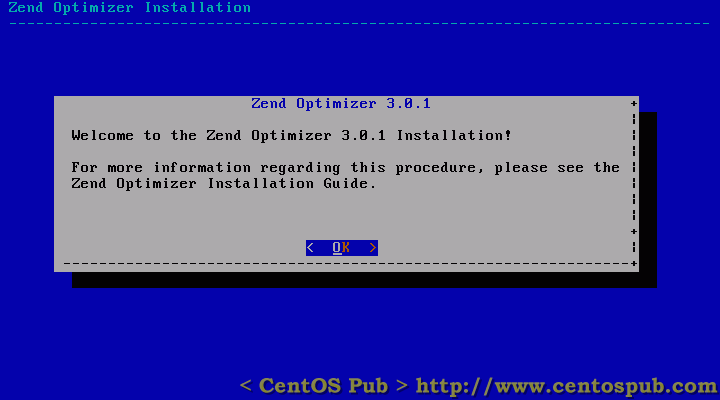
[2] 阅读协议后，选择EXIT。
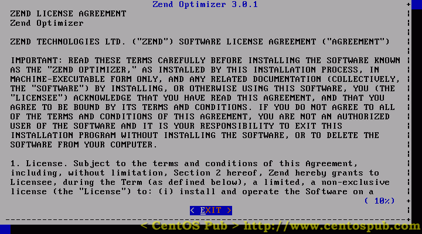
[3] 选择Yes同意使用协议。
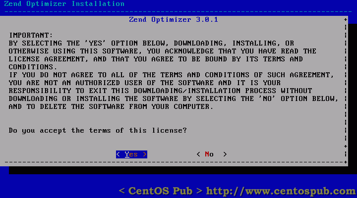
[4] 设置安装目录，这里以默认的/usr/local/Zend为例，然后选择OK进入下一步。
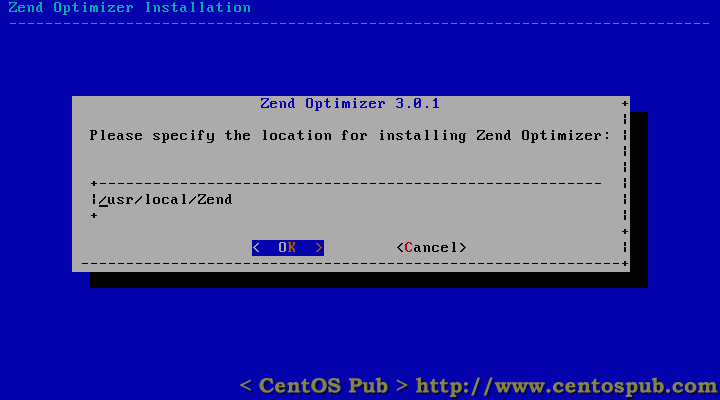
[5] 设置PHP配置文件所在的位置，一般为/etc（默认），如果PHP的配置文件在别处的话，请根据实际情况设置。
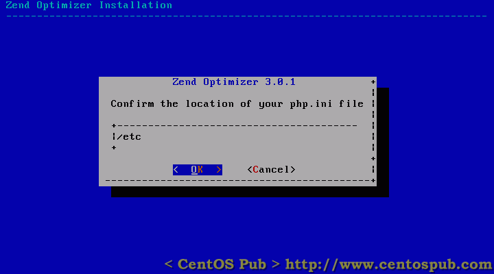
[6] 被询问是否使用Apache服务器，这里选择Yes。
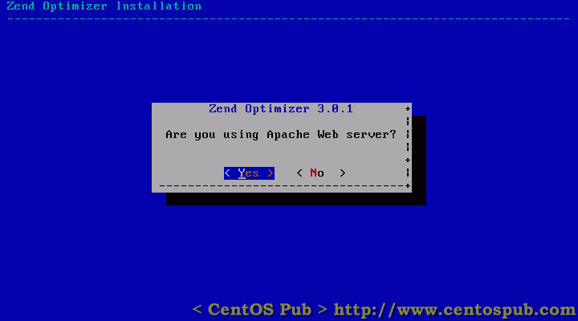
[7] 设置Apache的路径，这里保持默认，选择OK进入下一步。
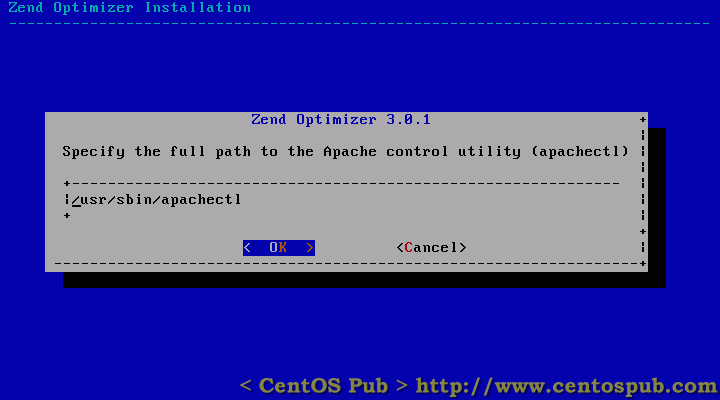
[8] 选择OK进入下一步。
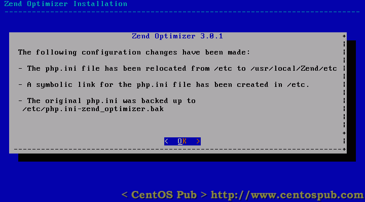
[9] 然后开始安装…稍等片刻，安装完成后，提示安装成功，选择OK进入下一步。
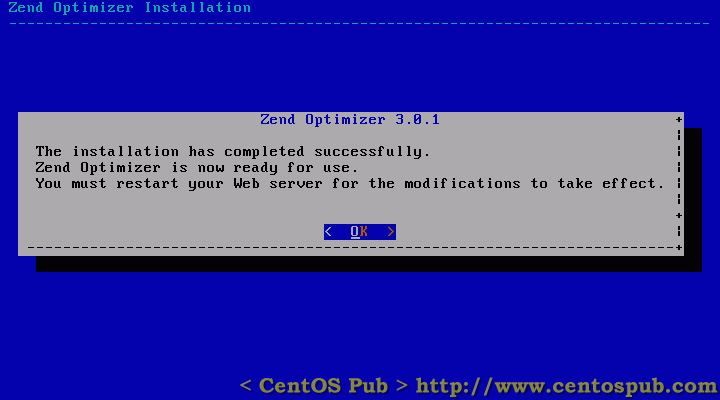
[10] 选择No，不重新启动HTTP服务（由于Apache也刚刚安装完毕，还没有被启动过。为了安全，等我们将Apache配置完毕后，再启动HTTP服务。）。然后会出现命令行 -- Zend Optimizer安装完毕。
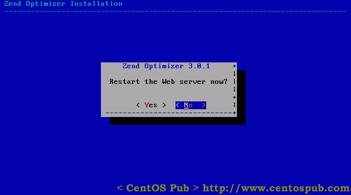
[root@sample ZendOptimizer-3.0.1-linux-glibc21-i386]# cd ← 回到root根目录
[root@sample ~]# rm -rf ZendOptimizer* ← 删除安装后遗留的源文件及目录 |
接下来，为了使服务器更安全以及更加符合我们的实际要求，对默认的设置进行一些必要的更改。尤其在一些细节方面，越少向外界透露服务器的信息，就越能保证服务器的安全。
[root@sample ~]# vi /etc/httpd/conf/httpd.conf ← 编辑Apache的配置文件
#
# Don't give away too much information about all the subcomponents
# we are running. Comment out this line if you don't mind remote sites
# finding out what major optional modules you are running
ServerTokens OS ← 找到这一行，将“OS”改为“Prod”（在出现错误页的时候不显示服务器操作系统的名称）
↓
ServerTokens Prod ← 变为此状态
#
# Optionally add a line containing the server version and virtual host
# name to server-generated pages (internal error documents, FTP directory
# listings, mod_status and mod_info output etc., but not CGI generated
# documents or custom error documents).
# Set to "EMail" to also include a mailto: link to the ServerAdmin.
# Set to one of: On | Off | EMail
#
ServerSignature On ← 找到这一行，将“On”改为“Off”
↓
ServerSignature Off ← 在错误页中不显示Apache的版本
#
# ServerAdmin: Your address, where problems with the server should be
# e-mailed. This address appears on some server-generated pages, such
# as error documents. e.g. admin@your-domain.com
#
ServerAdmin root@localhost ← 将管理员邮箱设置为自己常用的邮箱
↓
ServerAdmin yourname@yourserver.com ← 根据实际情况修改默认设置
#
# ServerName gives the name and port that the server uses to identify itself.
# This can often be determined automatically, but we recommend you specify
# it explicitly to prevent problems during startup.
#
# If this is not set to valid DNS name for your host, server-generated
# redirections will not work. See also the UseCanonicalName directive.
#
# If your host doesn't have a registered DNS name, enter its IP address here.
# You will have to access it by its address anyway, and this will make
# redirections work in a sensible way.
#
#ServerName new.host.name:80 ← 修改主机名
↓
ServerName www.centospub.com:80 ← 根据实际情况修改，端口号保持默认的80
#
# Possible values for the Options directive are "None", "All",
# or any combination of:
# Indexes Includes FollowSymLinks SymLinksifOwnerMatch ExecCGI MultiViews
#
# Note that "MultiViews" must be named *explicitly* --- "Options All"
# doesn't give it to you.
#
# The Options directive is both complicated and important. Please see
# http://httpd.apache.org/docs-2.0/mod/core.html#options
# for more information.
#
Options Indexes FollowSymLinks ← 找到这一行，删除“Indexes”，并添加“Includes”、“ExecCGI”
↓
Options Includes ExecCGI FollowSymLinks ← 允许服务器执行CGI及SSI
#
# AddHandler allows you to map certain file extensions to "handlers":
# actions unrelated to filetype. These can be either built into the server
# or added with the Action directive (see below)
#
# To use CGI scripts outside of ScriptAliased directories:
# (You will also need to add "ExecCGI" to the "Options" directive.)
#
#AddHandler cgi-script .cgi ← 找到这一行，去掉行首的“#”，并在行尾添加“.pl”
↓
AddHandler cgi-script .cgi .pl ← 允许扩展名为.pl的CGI脚本运行
#
# AllowOverride controls what directives may be placed in .htaccess files.
# It can be "All", "None", or any combination of the keywords:
# Options FileInfo AuthConfig Limit
#
AllowOverride None ← 找到这一行，将“None”改为“All”
↓
AllowOverride All ← 变为此状态，允许.htaccess
#
# The following directives define some format nicknames for use with
# a CustomLog directive (see below).
#
LogFormat "%h %l %u %t \"%r\" %>s %b \"%{Referer}i\" \"%{User-Agent}i\"" combined ← 找到这一行
↓
LogFormat "%h %l %u %t \"%!414r\" %>s %b \"%{Referer}i\" \"%{User-Agent}i\"" combined ← 改为此状态（添加“!414”到规则中，对于过长的日志不记录）
#
# Specify a default charset for all pages sent out. This is
# always a good idea and opens the door for future internationalisation
# of your web site, should you ever want it. Specifying it as
# a default does little harm; as the standard dictates that a page
# is in iso-8859-1 (latin1) unless specified otherwise i.e. you
# are merely stating the obvious. There are also some security
# reasons in browsers, related to javascript and URL parsing
# which encourage you to always set a default char set.
#
AddDefaultCharset UTF-8 ← 找到这一行，在行首添加“#”
↓
#AddDefaultCharset UTF-8 ← 不使用UTF-8作为网页的默认编码
AddDefaultCharset GB2312 ← 并接着添加这一行（添加GB2312为默认编码）
<Directory "/var/www/icons"> ← 找到这一个标签，并在标签中更改相应选项
Options Indexes MultiViews ← 找到这一行，将“Indexes”删除
↓
Options MultiViews ← 变为此状态（不在浏览器上显示树状目录结构）
AllowOverride None
Order allow,deny
Allow from all
</Directory>
[root@sample ~]# rm -f /etc/httpd/conf.d/welcome.conf /var/www/error/noindex.html ← 删除测试页 |
然后，启动HTTP服务。
[root@sample ~]# chkconfig httpd on ← 设置HTTP服务自启动
[root@sample ~]# chkconfig --list httpd
httpd 0:off 1:off 2:on 3:on 4:on 5:on 6:off ← 确认2--5为on的状态就OK
[root@sample ~]# /etc/rc.d/init.d/httpd start ← 启动HTTP服务
Starting httpd: [ OK ] ← 启动成功会出现OK
如果启动失败的话，会出现错误信息。原因可能是因为httpd.conf文件编辑过程中的失误，请检查httpd.conf。
|
然后，初步对HTTP服务进行简单测试。如下：
| [root@sample ~]# echo hello >> /var/www/html/index.html ← 建立测试页 |
然后，在下面输入服务器的IP地址，或域名（通过ifconfig命令可以看到IP地址；或者通过前面介绍过的“动态域名的申请”中的方法设置成功的域名来测试。）
如果成功的话会出现类似如下的页面：
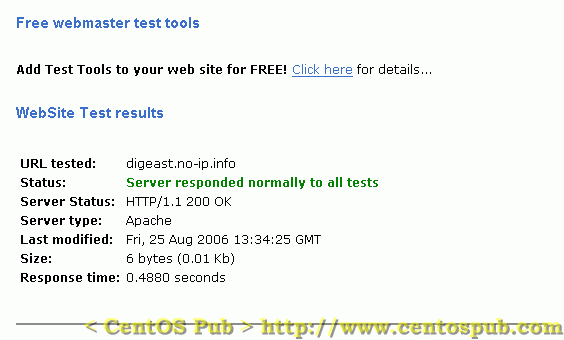
然后，删除刚刚建立的测试页。
| [root@sample ~]# rm -f /var/www/html/index.html ← 删除测试页 |
[1] 对HTML格式网页正确显示的测试
[root@sample ~]# vi /var/www/html/index.html ← 建立测试页，内容如下：
<html>
<head>
<meta http-equiv="Content-Type" content="text/html; charset=utf-8">
<title>Hello,World!</title>
<body>
Hello,World!
</body>
</html> |
然后在浏览器中输入“http://服务器IP地址”或者“http://你的域名”，如果出现“Hello,World！”，并且浏览器读取编码为简体中文，就OK。
为了在这之后测试.htaccess，将默认为主页的index.html测试页删除。
| [root@sample ~]# rm -f /var/www/html/index.html ← 删除刚刚测试用的网页 |
[2] 对CGI的支持进行测试
[root@sample ~]# vi /var/www/html/test.cgi ← 建立CGI测试页，内容如下：
#!/usr/bin/perl
print "Content-Type: text/html\n\n";
print "<html><body>";
print "Hello,World!CGI is working!<br>";
print "</body></html>";
[root@sample ~]# chmod 755 /var/www/html/test.cgi ← 然后将CGI测试文件属性设置为755 |
然后在浏览器中输入“http://服务器IP地址/test.cgi”或者“http://你的域名/test.cgi”，如果正确显示“Hello,World!CGI is working!”，说明对于CGI的支持没有问题。
[3] 对PHP的支持进行测试
[root@sample html]# vi /var/www/html/test.php ← 建立PHP测试文件，内容如下：
<?php
phpinfo();
?> |
然后在浏览器中输入“http://服务器IP地址/test.php”或者“http://你的域名/test.php”后，正确的显示出了服务器上PHP的详细信息，说明对PHP可以正确的支持。
[4] 对SSI进行测试
[root@sample ~]# vi /var/www/html/test.shtml ← 建立SSI测试页，内容如下：
<html>
<head>
<meta http-equiv="Content-Type" content="text/html; charset=utf-8">
<title>Hello,World!</title>
<body>
TEST SSI
<!--#config timefmt="%Y/%m/%d %H:%M:%S" -->
<!--#echo var="DATE_LOCAL" -->
</body>
</html> |
然后在浏览器中输入“http://服务器IP地址/test.shtml”或者“http://你的域名/test.shtml”，如果正确显示当时的日期和时间，说明对于SSI的支持没有问题。
[5] 对.htaccess的支持进行测试
[root@sample ~]# vi /var/www/html/index.shtml ← 建立.htaccess测试用的页，内容如下：
<html>
<head>
<meta http-equiv="Content-Type" content="text/html; charset=utf-8">
<title>Hello,World!</title>
<body>
The name of the file is <!--#echo var="DOCUMENT_NAME" -->
</body>
</html> |
然后在浏览器中输入“http://服务器IP地址”或者“http://你的域名”，如果显示“Forbidden”，说明.htaccess正常。
然后建立一个.htaccess文件，并定义相应规则，如下：
[root@sample html]# vi /var/www/html/.htaccess ← 建立.htaccess文件，内容如下：
DirectoryIndex index.shtml |
这时，再次在浏览器中输入“http://服务器IP地址”或者“http://你的域名”，如果正确显示“ The name of the file is index.shtml”，说明.htaccess中的规则生效状态，OK。
[6] 删除测试用的遗留文件
| [root@sample html]# rm -f /var/www/html/* /var/www/html/.htaccess ← 删除测试用过的遗留文件 |